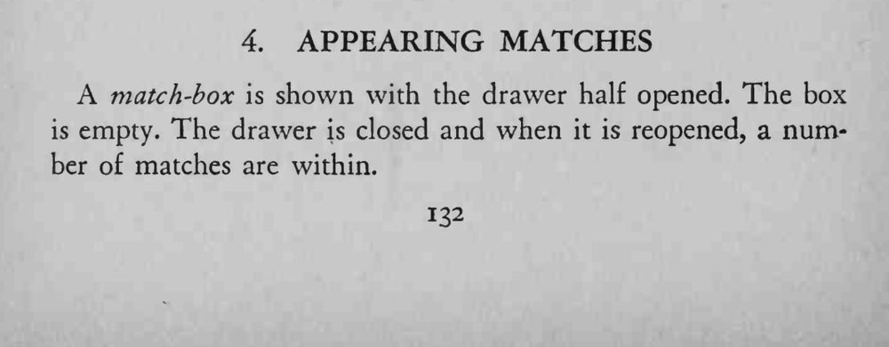
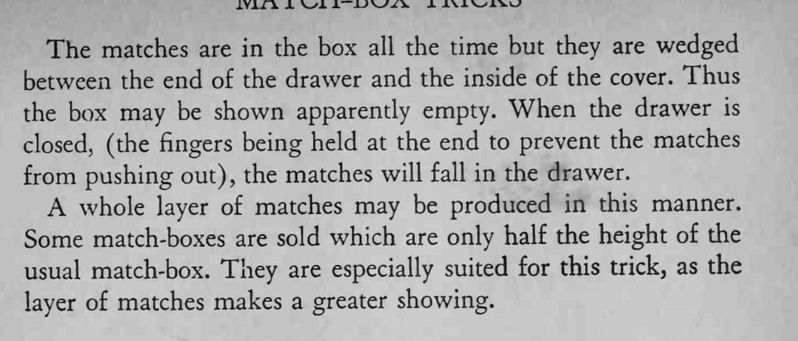

魔术师展示一个半开的火柴盒，里面是空的；把内屉合上再拉开，盒子里竟多出一层火柴。
半高的火柴盒更适合这个魔术，火柴层显得更多。


A match-box is shown with the drawer half opened. The box is empty. The drawer is closed and when it is reopened, a number of matches are within. The matches are in the box all the time but they are wedged between the end of the drawer and the inside of the cover. Thus the box may be shown apparently empty. When the drawer is closed, (the fingers being held at the end to prevent the matches from pushing out), the matches will fall in the drawer. A whole layer of matches may be produced in this manner. Some match-boxes are sold which are only half the height of the usual match-box. They are especially suited for this trick, as the layer of matches makes a greater showing.